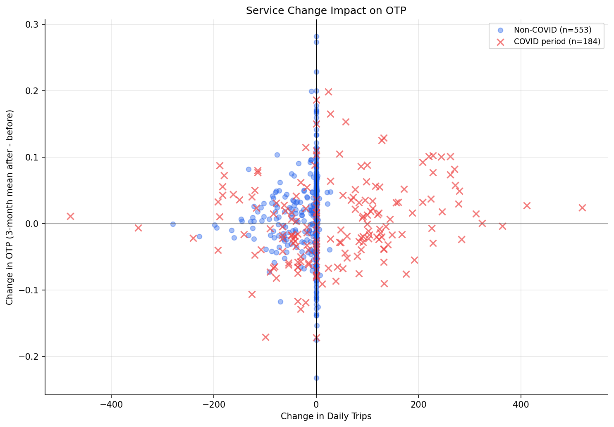

Analysis
29 - Service Change Impact on OTP
Ridership and External Factors
Coverage: 2016-11 to 2025-11 (from otp_monthly, scheduled_trips_monthly).
Built 2026-06-15 11:52 UTC · Commit e5cf673
Page Navigation
Analysis Navigation
Data Provenance
flowchart LR
29_service_change_impact(["29 - Service Change Impact on OTP"])
t_otp_monthly[("otp_monthly")] --> 29_service_change_impact
01_data_ingestion[["Data Ingestion"]] --> t_otp_monthly
u1_01_data_ingestion[/"data/routes_by_month.csv"/] --> 01_data_ingestion
u2_01_data_ingestion[/"data/PRT_Current_Routes_Full_System_de0e48fcbed24ebc8b0d933e47b56682.csv"/] --> 01_data_ingestion
u3_01_data_ingestion[/"data/Transit_stops_(current)_by_route_e040ee029227468ebf9d217402a82fa9.csv"/] --> 01_data_ingestion
u4_01_data_ingestion[/"data/PRT_Stop_Reference_Lookup_Table.csv"/] --> 01_data_ingestion
u5_01_data_ingestion[/"data/average-ridership/12bb84ed-397e-435c-8d1b-8ce543108698.csv"/] --> 01_data_ingestion
t_scheduled_trips_monthly[("scheduled_trips_monthly")] --> 29_service_change_impact
02_scheduled_trips[["Scheduled Trips ETL"]] --> t_scheduled_trips_monthly
u1_02_scheduled_trips[/"data/wprdc-schedule/schedule_monthly_agg.csv"/] --> 02_scheduled_trips
u2_02_scheduled_trips[/"data/wprdc-schedule/paac_pick_lookup.csv"/] --> 02_scheduled_trips
u3_02_scheduled_trips{"WPRDC Schedule Monthly Aggregate"} --> 02_scheduled_trips
u4_02_scheduled_trips{"WPRDC Pick Lookup"} --> 02_scheduled_trips
d1_29_service_change_impact(("numpy (lib)")) --> 29_service_change_impact
d2_29_service_change_impact(("polars (lib)")) --> 29_service_change_impact
d3_29_service_change_impact(("scipy (lib)")) --> 29_service_change_impact
classDef page fill:#dbeafe,stroke:#1d4ed8,color:#1e3a8a,stroke-width:2px;
classDef table fill:#ecfeff,stroke:#0e7490,color:#164e63;
classDef dep fill:#fff7ed,stroke:#c2410c,color:#7c2d12,stroke-dasharray: 4 2;
classDef file fill:#eef2ff,stroke:#6366f1,color:#3730a3;
classDef api fill:#f0fdf4,stroke:#16a34a,color:#14532d;
classDef pipeline fill:#f5f3ff,stroke:#7c3aed,color:#4c1d95;
class 29_service_change_impact page;
class t_otp_monthly,t_scheduled_trips_monthly table;
class d1_29_service_change_impact,d2_29_service_change_impact,d3_29_service_change_impact dep;
class u1_01_data_ingestion,u1_02_scheduled_trips,u2_01_data_ingestion,u2_02_scheduled_trips,u3_01_data_ingestion,u4_01_data_ingestion,u5_01_data_ingestion file;
class u3_02_scheduled_trips,u4_02_scheduled_trips api;
class 01_data_ingestion,02_scheduled_trips pipeline;
Findings
Findings: Service Change Impact on OTP
Summary
Schedule changes (pick period transitions) are associated with a small but statistically significant positive OTP shift on average, though the effect is weak and does not differ significantly by event type (increase, cut, or neutral).
Key Numbers
- 738 schedule change events detected across 101 routes (Nov 2016 -- Mar 2021)
- Mean OTP delta: +0.6 pp (naive t=2.82, p=0.005; route-clustered t=4.37, p<0.001) -- schedule changes are followed by slightly higher OTP on average
- By event type:
- Kruskal-Wallis across types: H=4.03, p=0.13 -- no significant difference between event types
- Trip delta vs OTP delta: Pearson r=0.072 (p=0.050), Spearman rho=0.074 (p=0.045) -- marginally significant positive association
Observations
- The dominant event type is "neutral" (413 of 738) -- same trip count, different schedule period. This suggests most pick transitions are schedule restructurings rather than service level changes.
- Service increases show the largest OTP improvement (+1.3 pp), while service cuts show nearly no change (+0.1 pp). However, the Kruskal-Wallis test does not detect a significant difference, so this pattern may be noise.
- COVID period events (n=184) show a smaller mean delta (+0.2 pp) than non-COVID events (+0.8 pp), possibly because the COVID period involves confounding system-wide disruptions.
- The correlation between trip count change and OTP change is marginally significant (p~0.05) but very weak (r=0.07), explaining less than 1% of variance.
Discussion
The statistically significant but tiny positive mean delta (+0.6 pp) is best interpreted as evidence that schedule changes are not harmful to OTP, rather than evidence that they improve it. The effect size is operationally negligible -- less than 1 percentage point -- and the lack of differentiation across event types (Kruskal-Wallis p=0.13) means we cannot conclude that service increases help or that service cuts hurt.
The most striking finding is the dominance of "neutral" events (413 of 738). Most pick period transitions leave trip counts unchanged, meaning PRT's schedule restructurings are primarily about rearranging timing, not adding or removing service. These neutral events still show a +0.8 pp OTP delta, which is consistent with the hypothesis that PRT uses schedule changes as opportunities to adjust running times or pad recovery time -- operational improvements that would improve OTP without changing trip frequency.
The marginal Spearman correlation (rho=0.074, p=0.045) aligns with the direction suggested by Analysis 30's pre-COVID subperiod (adding trips slightly degrades OTP), but in the opposite direction here -- adding trips is associated with better OTP. This apparent contradiction dissolves when considering that Analysis 29 measures 3-month average shifts around discrete events, while Analysis 30 measures month-over-month continuous variation. The schedule change event likely captures a package of operational adjustments (new running times, rerouted deadheads, adjusted layover) that happen to coincide with trip count changes, not a pure frequency effect.
For policy, the null Kruskal-Wallis result is the most actionable finding: it suggests PRT can adjust service levels (up or down) without expecting systematic OTP consequences. OTP is determined by factors other than how many trips are scheduled.
Caveats
- Non-independence: the 738 events come from only 101 routes (~7 events per route), and the 3-month averaging windows can overlap for events on the same route. The naive t-test (p=0.003) overstates significance by treating all events as independent. A route-clustered test (averaging within route first, then testing n=101 route means) provides a more conservative and appropriate p-value.
- Only events between consecutive months are included; gaps in the panel are excluded to avoid spurious multi-month deltas.
- The 3-month averaging window means overlapping events can contaminate each other. Routes with frequent schedule changes (every 2-3 months) have correlated before/after windows.
- The positive mean OTP delta could reflect a selection effect: PRT may time schedule changes to coincide with seasonal improvements or known operational gains.
- Causality cannot be established -- schedule changes and OTP improvements may share common causes (e.g., new management priorities).
Review History
- 2026-02-27: RED-TEAM-REPORTS/2026-02-27-analyses-26-30.md — 1 significant issue. Added consecutive-month filter and route-clustered t-test (t=4.37, p<0.001). Effect survives clustering; non-independence caveat added.
Output

scatter plot of trip change vs OTP change.
No interactive outputs declared.
all detected schedule change events with OTP and trip deltas.
Preview CSV
summary statistics by event type.
Preview CSV
Methods
Methods: Service Change Impact on OTP
Question
Do schedule changes (transitions between pick periods) correlate with OTP shifts? When PRT restructures service for a route, does OTP improve, decline, or stay the same?
Approach
- Identify schedule change events: months where a route's
pick_idchanges from the prior month inscheduled_trips_monthly. - For each change event, compute the OTP delta: mean OTP in the 3 months after the change minus mean OTP in the 3 months before.
- Also compute the trip count delta (daily_trips after minus before) to distinguish service increases from cuts.
- Classify events by direction: service increase (more trips), service cut (fewer trips), or neutral (same trips, different schedule).
- Only detect change events between consecutive months (no gaps) to avoid spurious multi-month deltas.
- Test whether OTP deltas differ from zero using both a naive one-sample t-test and a route-clustered t-test (average within route first, then test route means) to account for non-independence of events within routes. Test event-type differences with Kruskal-Wallis.
- Examine the COVID period (Mar--Apr 2020) separately, since it represents the largest service change in the dataset.
- Scatter plot: trip count change vs OTP change at each event, colored by pre/post COVID.
Data
| Name | Description | Source |
|---|---|---|
scheduled_trips_monthly |
Route-level monthly trip counts and pick_id (WEEKDAY day type) | prt.db table |
otp_monthly |
Monthly OTP per route | prt.db table |
schedule_periods |
Pick period start/end dates for context | prt.db table |
Output
Source Code
|
Sources
| Name | Type | Why It Matters | Owner | Freshness | Caveat |
|---|---|---|---|---|---|
| otp_monthly | table | Primary analytical table used in this page's computations. | Produced by Data Ingestion. | Updated when the producing pipeline step is rerun. | Coverage depends on upstream source availability and ETL assumptions. |
Upstream sources (5)
|
|||||
| scheduled_trips_monthly | table | Primary analytical table used in this page's computations. | Produced by Scheduled Trips ETL. | Updated when the producing pipeline step is rerun. | Coverage depends on upstream source availability and ETL assumptions. |
Upstream sources (4)
|
|||||
| numpy | dependency | Runtime dependency required for this page's pipeline or analysis code. | Open-source Python ecosystem maintainers. | Version pinned by project environment until dependency updates are applied. | Library updates may change behavior or defaults. |
| polars | dependency | Runtime dependency required for this page's pipeline or analysis code. | Open-source Python ecosystem maintainers. | Version pinned by project environment until dependency updates are applied. | Library updates may change behavior or defaults. |
| scipy | dependency | Runtime dependency required for this page's pipeline or analysis code. | Open-source Python ecosystem maintainers. | Version pinned by project environment until dependency updates are applied. | Library updates may change behavior or defaults. |